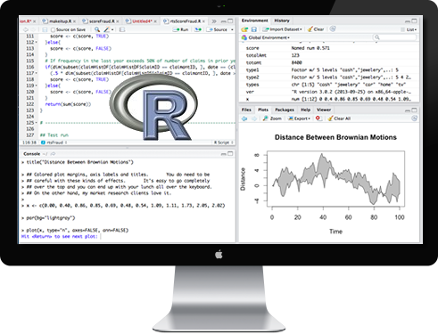
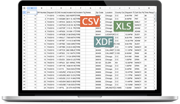
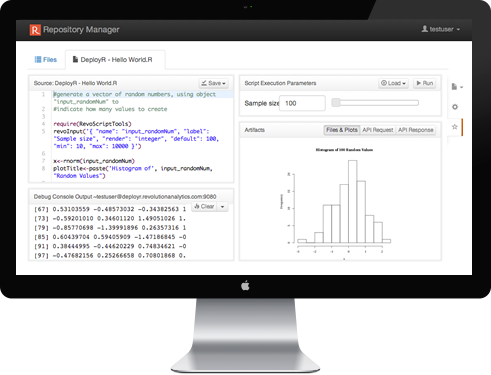
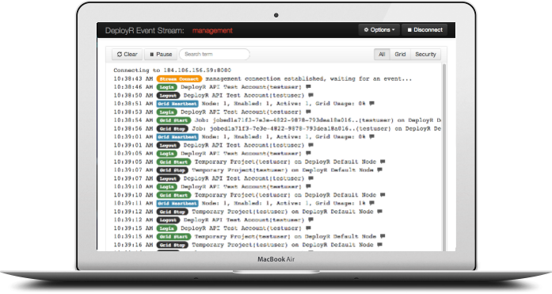
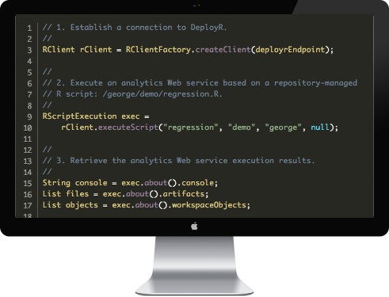

DeployR 8.1.0
Simple R analytics integration
for application developers.



Analytics Web Services
Deploy the outputs from
your existing analytic tools.

Repository Manager
Test analytics Web services live
in an intuitive Web interface.

Server & Repository
Rely on a secure, scalable
R session execution engine.

API & Client Libraries
Leverage native client
libraries in Java, JS & .NET.